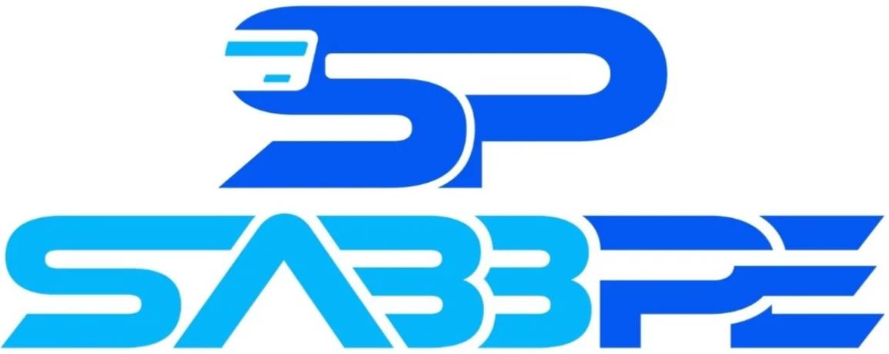

Detailed analysis of concurrency, capacity, limitations, reliability, bottlenecks, and burst handling in a backend-centered design where payment flow and email flow are handled separately.
1. TABLE OF CONTENTS
- Architecture Overview
- Capacity & Concurrency Analysis
- Assumed Infrastructure
- Burst Handling
- Accuracy & Reliability
- Advantages
- Bottlenecks & Limitations
- Recommendations
- Concurrency Situations & Use Cases
- Conclusion
2. ARCHITECTURE OVERVIEW
Email notifications are triggered only after a payment is successful. Spring Boot sends the payment-success event to n8n webhook, which publishes messages to RabbitMQ. n8n consumer workflow then reads the queue and sends emails using Gmail SMTP.
Example payload from payment backend to n8n webhook (after successful payment)
{
"email": "abc@gmail.com",
"merchantOrderRef": "ORD-1001",
"amount": 501,
"gateway": "EASEBUZZ"
}
Key Characteristics
- Asynchronous processing
- Queue-based buffering
- Decoupled components
- Retry-capable workflow behavior
- Independent consumer-side scaling
Best For
- Startup and MVP payment systems
- Notification-heavy applications
- Systems with bursty payment traffic
- Use cases requiring fast payment API response
3. CAPACITY & CONCURRENCY ANALYSIS
2.1 Component Wise Capacity
| Component | Max Capacity (Approx) | Details |
|---|---|---|
| n8n Webhook | 100-500 requests/sec burst intake | Depends on server size and payload complexity. Webhook is typically lightweight. |
| RabbitMQ | 10,000 - 50,000+ queued msgs | High queueing capability for small JSON payloads and spike buffering. |
| n8n Consumer Workflow | 2 - 5 emails/sec (single consumer) | Bound mainly by SMTP speed and workflow execution overhead. |
| Gmail SMTP | 500 - 2,000 emails/day practical | Rate limits and anti-spam protections are the primary throughput cap. |
2.2 End-to-End Capacity (with Gmail)
4. ASSUMED INFRASTRUCTURE
Backend
Separate existing instance.
Queue/Workflow Server
Recommended:
| Resource | Value |
|---|---|
| CPU | 2 vCPU |
| RAM | 4 GB |
| Disk | SSD |
| OS | Ubuntu |
Components Hosted
- RabbitMQ
- n8n
- consumer workflows
Capacity Reality
- RabbitMQ is typically not the bottleneck in this setup.
- Primary limits are SMTP provider speed and consumer throughput.
- Performance varies with template complexity, payload size, and VM health.
5. BURST HANDLING
3.1 Burst Scenario Example
If 1,000 payments happen in a short interval, backend remains responsive and RabbitMQ absorbs the spike. Email processing continues gradually based on consumer + SMTP throughput.
| Component | Behavior During Burst | What Happens |
|---|---|---|
| n8n Webhook | Handles high event ingress | No immediate issue for moderate server sizes. |
| RabbitMQ | Stores all messages durably | Queue backlog builds temporarily. |
| n8n Consumer | Processes at ~2-5 emails/sec (single consumer) | Backlog drain may take minutes. |
| Gmail | Rate-limited email sender | Primary throughput bottleneck. |
3.2 Queue Backlog Growth Example
Assumption: Incoming 50 msgs/sec, processing 5 msgs/sec.
| Incoming | Processing | Backlog Growth |
|---|---|---|
| 50 msg/sec | 5 msg/sec | 45 msg/sec |
After 1 minute: 2,700 pending messages. After 10 minutes: 27,000 pending messages (if sustained).
6. ACCURACY & RELIABILITY
At-Least-Once Delivery
Messages will be delivered at least once. Duplicates are possible after retries or crash-recovery paths.
Message Persistence
RabbitMQ stores messages durably. Messages are not lost on typical service restart scenarios.
Retry Mechanism
n8n workflows can retry failed sends. Recommended retry depth: 3-5.
Dead Letter Queue
Failed messages after max retries should move to DLQ for manual inspection.
Email Delivery Accuracy
Delivery inbox rate varies by sender reputation/content. Gmail can mark some traffic as spam.
Reliability Summary
Reliability expectation (if configured correctly):
- Queue persistence: High
- Message durability: High
- Burst absorption: High
- Email delivery speed: Medium
- Email provider reliability: Medium with Gmail
Data Safety
- No data loss when queue durability and ACK strategy are correct.
- Messages stay safe during temporary consumer downtime.
- Idempotency key (`paymentId + eventType`) recommended to reduce duplicate effects.
7. ADVANTAGES
System-Level Benefits
- Backend protection: payment API remains responsive during SMTP delays or failures.
- Asynchronous decoupling: payment completion is separated from email send time.
- Burst absorption: RabbitMQ safely buffers sudden high-volume payment events.
- Reliable retry handling: failed sends can be retried without blocking payment flow.
Operational Benefits
- Low operational complexity: practical to run on a single VM for startup stages.
- Cost efficiency: RabbitMQ and n8n can be self-hosted with minimal licensing cost.
- Scalable queue layer: queueing handles spikes better than direct synchronous email.
- MVP-ready foundation: suitable for moderate merchant traffic and notification workloads.
8. BOTTLENECKS & LIMITATIONS
5.1 Major Bottlenecks
| Bottleneck | Impact | Details |
|---|---|---|
| Gmail Sending Limit | Very High | Practical limit around 500-2,000 emails/day depending on account type. |
| Gmail Per-Second Constraint | Very High | Low sustained per-second rate; anti-spam checks can trigger blocks. |
| n8n Consumer Single Threaded Path | High | One workflow execution path limits throughput under burst conditions. |
| Server Resources | Medium | CPU and memory cap total concurrent workflow execution. |
| Network Latency | Low-Medium | Affects webhook receive latency and SMTP round trips. |
5.2 Other Limitations
- Gmail is not ideal for large-scale transactional notification workloads.
- Heavy burst traffic creates backlog and increases delivery latency.
- n8n is automation-first and not a specialized ultra-high-throughput worker runtime.
- Under strict SLA requirements, dedicated email infrastructure is preferred.
5.3 Recommended Evolution
Current: Backend → n8n Webhook → RabbitMQ → n8n Consumer → Gmail
Future: Backend → n8n Webhook → RabbitMQ → Multiple Workers → Amazon SES
9. RECOMMENDATIONS
Immediate (Current Setup)
- Keep ACK only after successful email send.
- Use idempotency key: paymentId + eventType.
- Add monitoring for queue depth, consumer lag, and SMTP failures.
- Set controlled retries (3-5) for failed workflow executions.
Short-Term Scaling
- Increase consumers from 1 to 3-5 for faster queue drain.
- Introduce main_queue, retry_queue, and dead_letter_queue.
- Use lightweight templates for better processing throughput.
- Set queue and worker alerts for burst scenarios.
Production-Grade Direction
- Replace Gmail SMTP with Amazon SES for higher throughput and concurrency.
- Move to multiple worker architecture for better resiliency under spike traffic.
- Track SLA metrics: delivery latency, success rate, retry rate, and backlog drain time.
- Keep RabbitMQ + n8n on dedicated infrastructure with sufficient CPU/RAM headroom.
10. CONCURRENCY SITUATIONS & USE CASES
9.1 Practical Concurrency Examples
| Situation | What Happens in System | Expected Outcome |
|---|---|---|
| 100 merchants payment success in short window | Webhook burst accepted, RabbitMQ queues events quickly, consumer starts draining immediately | Very safe; minimal delay in email delivery |
| 300 merchants payment success at same time | Queue depth rises temporarily, backend remains responsive, consumer and Gmail process gradually | Comfortable; short delivery delay possible during peak minute |
| 500 merchants payment success burst | RabbitMQ remains stable, queue backlog grows if ingress exceeds email send rate | Moderate operational risk; noticeable notification delay |
| 1000+ merchants payment success burst | Backend and queue stay stable, Gmail and single consumer become bottleneck | High delay risk; delivery can take several minutes unless consumers are scaled |
Backlog Illustration
If incoming rate is 50 msgs/sec and processing rate is 5 msgs/sec, backlog grows by 45 msgs/sec.
After 1 minute: 2,700 pending messages. RabbitMQ can store this safely, but delivery time increases until backlog drains.
9.2 Common Use Cases
Suitable Use Cases
- Payment confirmation emails to merchants/customers.
- Startup and MVP payment systems with moderate burst traffic.
- Notification workflows where payment API must stay fast.
- Queue-first systems requiring retry and delivery safety.
Less Suitable Use Cases
- Ultra-high volume transactional email at enterprise scale using Gmail.
- Strict low-latency SLA where every email must be near-instant.
- Millions of daily notifications without provider upgrade and worker scaling.
- Regulated workloads needing advanced deliverability governance.
11. CONCLUSION
Final Assessment
This is a practical backend-centered architecture where payment flow and email notification flow are handled separately. After successful payment, the backend triggers the email event path through n8n and RabbitMQ, which protects payment responsiveness and improves operational stability under burst traffic.
Summary of Strengths
- Fast payment response with separate email processing path.
- Reliable queue buffering and retry-oriented handling.
- Low-cost, MVP-friendly deployment model.
Summary of Constraints
- Gmail throughput and daily limits cap scaling.
- Single-consumer execution increases delay in large bursts.
- Enterprise SLA workloads require stronger mail infrastructure.
Closing Direction
Follow the recommendation path: scale consumers, add retry/DLQ patterns, and migrate to Amazon SES for higher throughput, stronger deliverability, and lower operational risk in production growth stages.